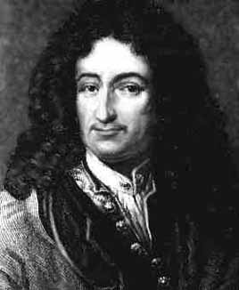
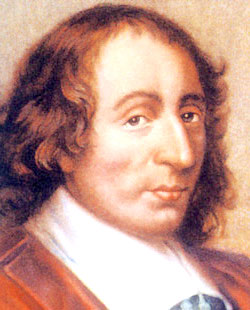
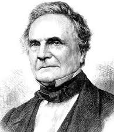

BIENVENIDOS A MI POST DE PROGRAMACIÓN
En este post les enseñare algo de historia de la programación, asi como los distintos lenguajes de programacion mas usados en la historia de la creacion de la computadora asi como los lenguajes utilizados en la actualidad espero les guste asi que empesemos con algo de Historia
Lo Último del blog "La Realidad Virtual"
imagenes tridimencionales
experiencia con la realidad virtual
HISTORIA DE LA PROGRAMACIÓN
Gottfried wilhem von Leibriz (1646-1776) quien aprendio matematicas de forma autodidacta (método no aconsejable en programación) construyendo una maquina similar a la de Pascal, aunque algo mas complej, podia dividir, multiplicar y resolver raices cuadradas, pero quien realmete influyó en el diseño de los primeros computadores fue Charles Babbage (1793-1871). Con la colaboración de la hija de Lord Byron, Lady Ada Contess of Lovelace (1815-1852), a la que debe su nombre el lenguaje ADA creado por el DoD (departamento de defensa de Estados Unidos) en los años 70. Babbage diseño y construyo la "maquina diferencial" para el calculo de polinomios. mas tarde diseño la "maquina analitica" de proposito feneral, capaz de resolver cualquier operacion matematica. Murio sin poder terminarla, debido al escepticismo de sus patrocinadores y a que la tecnologia de la epoca no ea lo suficientemente avanzada.
Un hito importante en la historia de la informatica fueron las tarjetas perforadas como medio para alimentar los computadores. Lady ada Lovelace propuso la utilizacion de las tarjetas perforadas en la maquina de Babbagel Para que se enteren todos esos machistas desaprensivosm el primer programador/a fue una mujer. En 1880 el censo en Estados Unidos tardo mas de 7 años en realizarse. Es obvio que los datos no eran muy actualizados. Un asistente de la oficina del censo llamado Herman Hollerit (1860-1929) desarrolo un sistema para automatizar la pesada tarea del censo.
Aprendiendo programación puedes mejorar tu entendimiento para solucionar problemas en tu vida cotidiana

Gottfried

Blace Pascal
